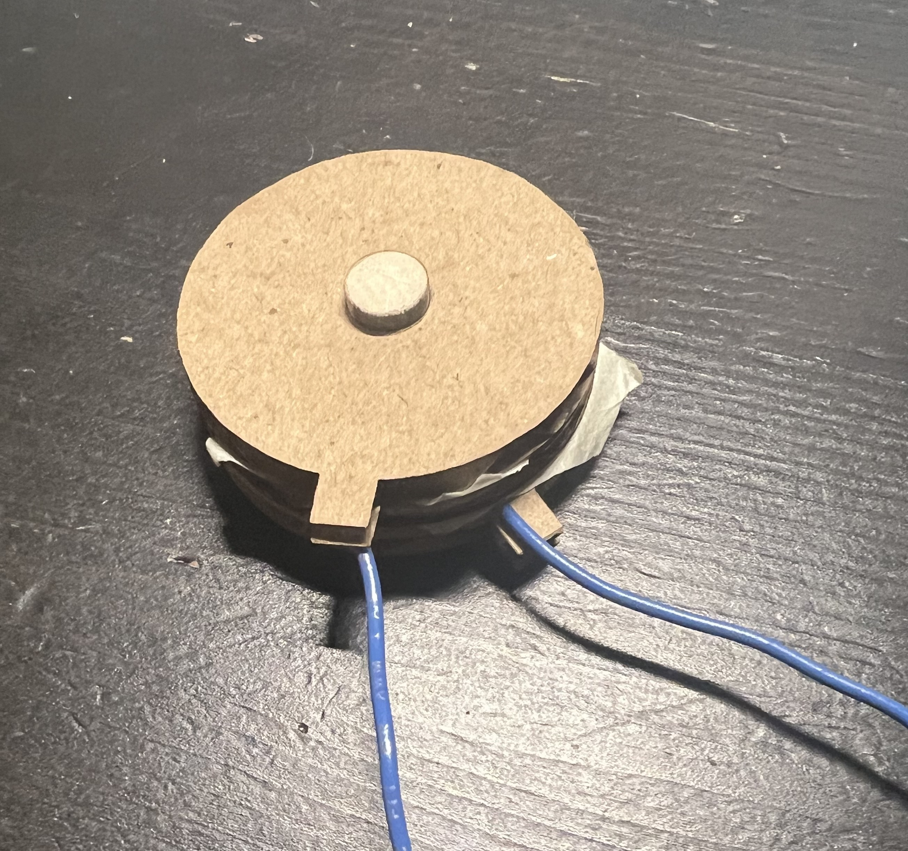
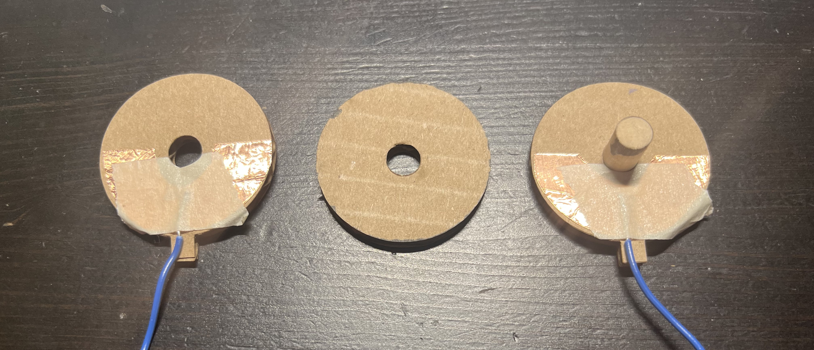

<div class="textcontainer">
<p class="margin"> </p>
<h3>Day 6: Electronic Inputs</h3>
<h4>Assignment 1: Capacitive Sensor<h4>
for my capacitive sensor, i made a kind of rotation sensor and it works for the most part aside for a measureable sensitivity
to the outside environment (about -50 from putting my hands around it).<br>
<p></p><p></p><br>
And calibrating the sensor (angle is measured between the 2 tabs), we get values from ~200 to ~390 with a mostly liner relationship
between angle and measured capacitance.
<iframe src="https://www.desmos.com/calculator/x1k8jvok0x?embed" width="100%" height="500" style="border: 1px solid #ccc" frameborder=0></iframe>
And here is the code:
<pre><p class="code_background"><code>const int analog_pin = 4;
const int tx_pin = 18;
void setup() {
pinMode(tx_pin, OUTPUT); // Pin 4 provides the voltage step
Serial.begin(115200);
}
int serial_min = 250;
int serial_max = 250;
const size_t buf_size = 256;
int buf[buf_size] = {250};
size_t buf_idx = 0;
void read_cap() {
digitalWrite(tx_pin, LOW);
delayMicroseconds(100);
digitalWrite(tx_pin,HIGH); // Step the voltage high on conductor 1.
int read_high = analogRead(analog_pin); // Measure response of conductor 2.
delayMicroseconds(100); // Delay to reach steady state.
digitalWrite(tx_pin,LOW); // Step the voltage to zero on conductor 1.
int read_low = analogRead(analog_pin); // Measure response of conductor 2.
buf[buf_idx++] = read_high - read_low;
buf_idx %= buf_size;
}
int buf_average() {
int mean = 0;
for (int i = 0; i < buf_size; i++) {
mean += buf[i];
}
return mean / buf_size;
}
void loop() {
read_cap();
int val = buf_average();
serial_min = min(serial_min, val);
serial_max = max(serial_max, val);
Serial.printf("min:%d,", serial_min);
Serial.printf("max:%d,", serial_max);
Serial.printf("val:%d", val);
Serial.println();
}</code></p></pre>
<h4>Assignment 2: Microphone</h4>
for my sensor, I decided to rig up a microphone since I would need to use one for my final project. Little did I know how hard it would be.
The little SPH0645 mic I was using took forever to get running, having to switch APIs and swap the specific mic I was using. But once it started to give
proper readings, it wasn't that hard to basic operations on them. For now, I stuck to simply measuring volume which seems to have worked. Since the
value jumps around across various orders of magnitude, the following measurements are all log base 2 of the raw measurement. Measuring in my bedroom, the baseline is about 19,
the max from directly tapping the mic is about 30, from singing directly into it is about 30, and from singing to it on my desk is about 25. Being a bit more
analytical, heres some volume readings I got when placing my phone playing A4 (440 hz, sine wave) from a <a href="https://www.szynalski.com/tone-generator/" target="_blank">tone generator website</a> on my phone at max volume at various distances (in cm):<br>
<iframe src="https://www.desmos.com/calculator/lpmhjucxvu?embed" width="100%" style="aspect-ratio: 3/2; border: 1px solid #ccc;" frameborder=0></iframe><br>
And here is the code:
<pre><p class="code_background"><code>#include <ESP_I2S.h>
I2SClass I2S;
void setup() {
Serial.begin(115200);
I2S.setPins(23, 22, -1, 21, -1); //SCK, WS, SDOUT, SDIN, MCLK
I2S.begin(I2S_MODE_STD, 44100, I2S_DATA_BIT_WIDTH_32BIT, I2S_SLOT_MODE_MONO);
}
const size_t buffer_size = 8192;
int32_t buffer[buffer_size];
size_t buffer_idx = 0;
void read_mic() {
size_t read_amount = (size_t) I2S.available();
if (buffer_idx + read_amount / 4 > buffer_size) {
size_t read1_size = 4 * (buffer_size - buffer_idx);
size_t read2_size = read_amount - read1_size;
I2S.readBytes((char*) &buffer[buffer_idx], read1_size);
I2S.readBytes((char*) &buffer[0], read2_size);
buffer_idx = read2_size / 4;
} else {
I2S.readBytes((char*) &buffer[buffer_idx], read_amount);
buffer_idx += read_amount / 4;
}
}
int64_t get_volume() {
int64_t mean = 0;
for (int i = 0; i < buffer_size; i++) {
int64_t sample = buffer[i];
mean += sample;
}
mean /= buffer_size;
int64_t deviation = 0;
for (int i = 0; i < buffer_size; i++) {
int64_t sample = buffer[i];
deviation += abs(mean - sample);
}
return deviation / buffer_size;
}
int serial_min = 20;
int serial_max = 30;
void loop() {
read_mic();
Serial.printf("min:%d,", serial_min);
Serial.printf("max:%d,", serial_max);
Serial.print("volume:");
Serial.println(log2((double)get_volume()));
}
</code></p></pre>
</div>